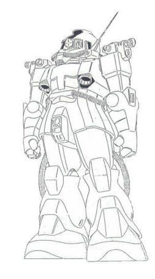

| MS-06E Zaku Reconnaissance Type High Mobility Reconnaissance/Surveillance Zeon Duchy Mobile Suit |
|
|  | |
General and Technical Data |
|
|
Model number: MS-06E Code name: Zaku Reconnaissance Type Unit type: mass production reconnaissance mobile suit Operator: Zeon Duchy Dimensions: overall height 18.0 meters; head height 17.7 meters Weight: empty 60.4 metric tons; max gross 76.2 metric tons Construction: super high-tensile steel Powerplant: Minovsky type ultracompact fusion reactor, output rated at 951 kW Propulsion: rocket thrusters: total output 62750 kg Performance: thruster acceleration 1.32 G Equipment and design features: sensors, range 7500 meters; additional cameras and sensor systems on shoulders and main body; external propellant tanks, ejectable, mounted on backpack Optional fixed armaments: shield, mounted on either forearm Optional hand armaments: high resolution camera, includes high-power optical zoom lenses; 3x grenade Magnetic Storage Racks: 5, primary rack on backpack, one secondary rack on either hip. 2 ammunition racks on front hips. Legs can additionally mount 3-tube missile launchers or panzer fausts. |
|
| Technical and Historical Notes | |
|
The Zeon Duchy is known for its flare for inventive mobile suit variants, and this strange Zaku is no exception. The MS-09 Dom's inevitable release would essentially begin replacing the Zaku II as a frontline combat mobile suit, so Zeon engineers felt more than encouraged to develop specialized mobile suits for specific mission roles.
The MS-06E Reconnaissance Zaku is one such example. The Recon Zaku has been stripped of some of its armor as well as its weapon systems and is bolstered by dozens of additional thrusters and apogee motors, giving it supreme mobility and speed. Ejectable external propellant tanks on its backpack give it a long sortie time, allowing it to keep tabs on enemy forces from long distance for extended periods of time. Dozens of high-speed cameras are mounted all over its body, giving it the ability to take moving video in high detail from all sides simultaneously, regardless of the mobile suit's orientation. It also carries a high-resolution still camera like a handheld weapon. The camera takes extremely detailed photographs of the target as opposed to a video, and massive zoom and focus lenses allow the Recon Zaku to peek in at distant targets. A variable infrared system also allows it to capture images of targets attempting to hide from normal scanning behind obstacles.
The Zaku Reconnaissance Type is intended exclusively for use in space, as its highly advanced systems and delicate cameras are weak to impact and easily damaged by excessive force.
|
 RPG quick stats sheet
RPG quick stats sheet | Weapons and Features | |
|
 

Zaku II Cockpit |
|